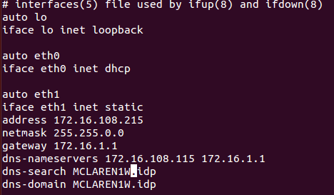
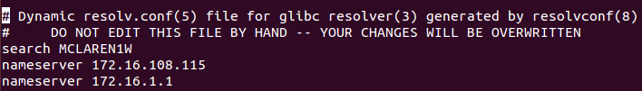
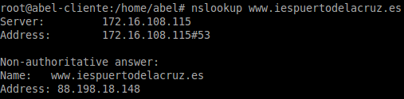
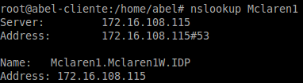
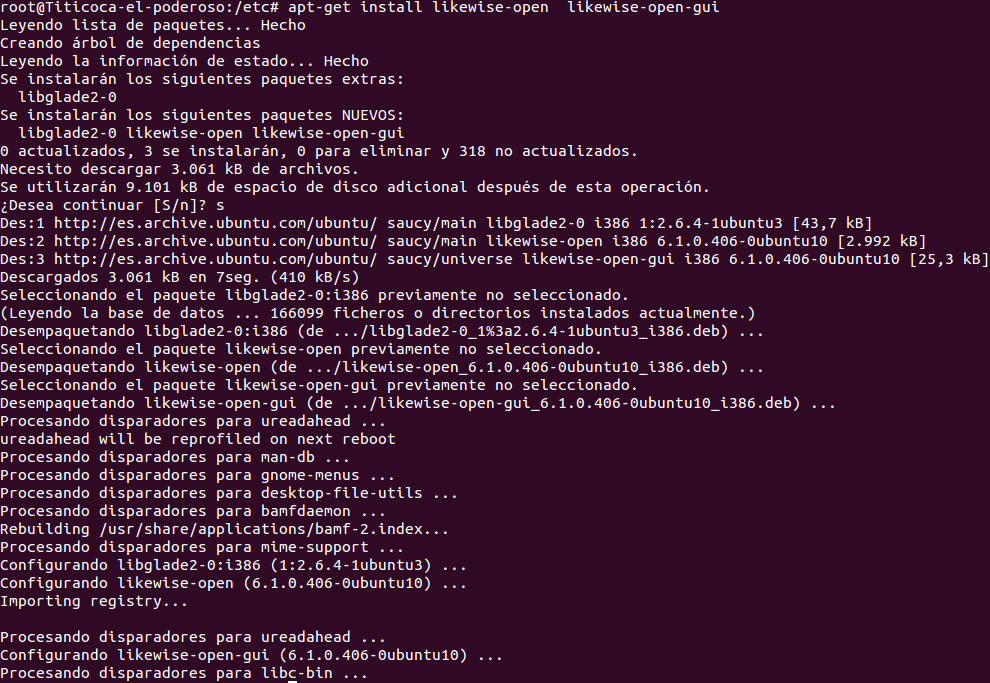
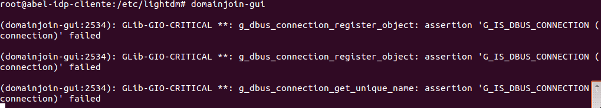
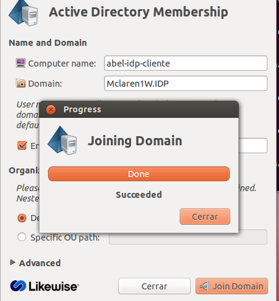
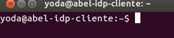

- Módulo: Sistemas Operativos
- Título del trabajo DOMINIOS
- Componentes del grupo: Abel García García
- Curso Académico: 2013/2014
- Fecha de entrega: 28 de Mayo de 2014
- Interfaz de RED: Recordar que las máquinas (Servidor y cliente) deben tener la configuración de red estática.
- Servidores DNS: Los clientes, para unirse al PDC, deben tener como DNS1=ip-del-pdc, y DNS2=ip-de-fry.
Para configurar los DNS en una máquina Ubuntu, podemos hacer uso del propio fichero de configuración de red (/etc/network/interfaces)

- Para configurar los servidores DNS, tenemos otra forma. Que es editar el archivo /etc/resolv.conf

- Comprobar configuración DNS: Para comprobar si la resolución de nombres está funcionando correctamente hacemos las siguientes pruebas


- Vamos a unir el cliente Ubuntu al PDC Windows Server usando una aplicación de entorno gráfico, llamada Likewise.
- Para instalar Likewise en Ubuntu instalamos los paquetes: likewise-open y likewise-open-gui

- Para ejecutar el programa, abrimos un terminal y ponemos: domainjoin-gui

- Completamos la siguiente información de configuración:
- Computer name: nombre de nuestra máquina (Aparece por defecto)
- Domain: el dominio de nuestro PDC.
- Luego nos pedirá usuario y contraseña. Aquí ponemos el nombre de nuestro usuario administrador del PDC, y su contraseña.
- Cuidado revisar bien al escribir el nombre de usuario. No es lo mismo "Administrator" que "Administrador".
- El administrador del domino en Windows suele llamarse "Administrador", y en GNU/Linux es "root"
- Luego saldrá una pantalla indicando si el proceso ha sido correcto, y se pide reiniciar

- Desde el cliente, entramos al sistema con algún usuario del dominio
